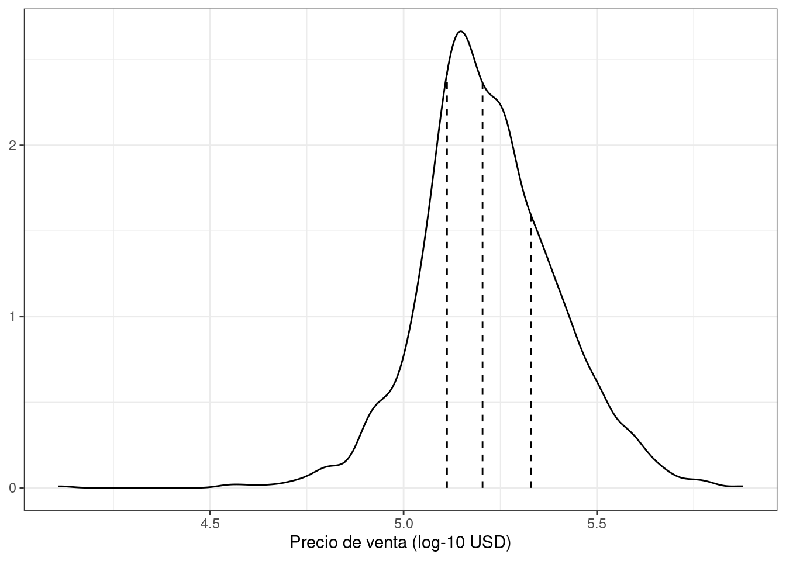

library(tidymodels)
tidymodels_prefer()
# Configure el flujo de números aleatorios usando `set.seed()` para que los resultados puedan ser
# reproducido más tarde.
set.seed(501)
# Guarde la información dividida para una división 80/20 de los datos
ames_split <- initial_split(ames, prop = 0.80)
ames_split
## <Training/Testing/Total>
## <2344/586/2930>5 Gastar Nuestros Datos
Hay varios pasos para crear un modelo útil, incluida la estimación de parámetros, la selección y ajuste del modelo y la evaluación del desempeño. Al comienzo de un nuevo proyecto, generalmente hay un conjunto inicial finito de datos disponibles para todas estas tareas, que podemos considerar como un presupuesto de datos disponible. ¿Cómo se deben aplicar los datos a diferentes pasos o tareas? La idea de gasto de datos es una primera consideración importante al modelar, especialmente en lo que se refiere a la validación empírica.
Cuando los datos se reutilizan para múltiples tareas, en lugar de “gastarlos” cuidadosamente del presupuesto finito de datos, aumentan ciertos riesgos, como el riesgo de acentuar el sesgo o agravar los efectos de los errores metodológicos.
Cuando hay grandes cantidades de datos disponibles, una estrategia inteligente es asignar subconjuntos específicos de datos para diferentes tareas, en lugar de asignar la mayor cantidad posible (o incluso toda) a la estimación de parámetros del modelo únicamente. Por ejemplo, una estrategia posible (cuando tanto los datos como los predictores son abundantes) es gastar un subconjunto específico de datos para determinar qué predictores son informativos, antes de considerar la estimación de parámetros. Si el conjunto inicial de datos disponibles no es enorme, habrá cierta superposición en cómo y cuándo se “gastan” o asignan nuestros datos, y es importante contar con una metodología sólida para el gasto de datos.
Este capítulo demuestra los conceptos básicos de división (es decir, creación de un presupuesto de datos) para nuestro conjunto inicial de muestras para diferentes propósitos.
5.1 Métodos Comunes Para Dividir Datos
El enfoque principal para la validación del modelo empírico es dividir el conjunto de datos existente en dos conjuntos distintos, el conjunto de entrenamiento y el conjunto de prueba. Una parte de los datos se utiliza para desarrollar y optimizar el modelo. Este conjunto de entrenamiento suele ser la mayoría de los datos. Estos datos son una zona de pruebas para la construcción de modelos donde se pueden ajustar diferentes modelos, se investigan estrategias de ingeniería de características, etc. Como profesionales del modelado, pasamos la gran mayor parte del proceso de modelado utilizando el conjunto de entrenamiento como sustrato para desarrollar el modelo.
La otra parte de los datos se coloca en el conjunto de prueba. Esto se mantiene en reserva hasta que se elijan uno o dos modelos como los métodos con mayor probabilidad de éxito. Luego, el conjunto de prueba se utiliza como árbitro final para determinar la eficacia del modelo. Es fundamental mirar el conjunto de prueba sólo una vez; de lo contrario, pasa a formar parte del proceso de modelado.
¿Cómo deberíamos llevar a cabo esta división de los datos? La respuesta depende del contexto.
Supongamos que asignamos el 80% de los datos al conjunto de entrenamiento y el 20% restante a las pruebas. El método más común es utilizar muestreo aleatorio simple. El paquete rsample tiene herramientas para realizar divisiones de datos como esta; la función initial_split() fue creada para este propósito. Toma el marco de datos como argumento, así como la proporción que se colocará en el entrenamiento. Usando el marco de datos producido por el fragmento de código del resumen en Sección 4.2 que preparó el conjunto de datos de Ames:
La información impresa denota la cantidad de datos en el conjunto de entrenamiento (\(n = 2,344\)), la cantidad en el conjunto de prueba (\(n = 586\)), y el tamaño del conjunto original de muestras. (\(n = 2,930\)).
El objeto ames_split es un objeto rsplit y contiene sólo la información de partición; Para obtener los conjuntos de datos resultantes, aplicamos dos funciones más:
ames_train <- training(ames_split)
ames_test <- testing(ames_split)
dim(ames_train)
## [1] 2344 74Estos objetos son marcos de datos con las mismas columnas que los datos originales pero solo las filas apropiadas para cada conjunto.
El muestreo aleatorio simple es apropiado en muchos casos, pero existen excepciones. Cuando hay un desequilibrio de clases dramático en los problemas de clasificación, una clase ocurre con mucha menos frecuencia que otra. El uso de una muestra aleatoria simple puede asignar al azar estas muestras poco frecuentes de manera desproporcionada al conjunto de entrenamiento o prueba. Para evitar esto, se puede utilizar muestreo estratificado. La división de entrenamiento/prueba se realiza por separado dentro de cada clase y luego estas submuestras se combinan en el conjunto general de entrenamiento y prueba. Para problemas de regresión, los datos de resultados se pueden agrupar artificialmente en cuartiles y luego se puede realizar un muestreo estratificado en cuatro ocasiones distintas. Este es un método eficaz para mantener similares las distribuciones del resultado entre el conjunto de entrenamiento y de prueba. La distribución del resultado del precio de venta para los datos de vivienda de Ames se muestra en Figura 5.1.

Como se analiza en el Capítulo 4, la distribución del precio de venta está sesgada hacia la derecha, con proporcionalmente más casas económicas que caras a ambos lados del centro de la distribución. La preocupación aquí con una simple división es que las casas más caras no estarían bien representadas en el conjunto de capacitación; esto aumentaría el riesgo de que nuestro modelo fuera ineficaz para predecir el precio de dichas propiedades. Las líneas verticales de puntos en Figura 5.1 indican los cuatro cuartiles de estos datos. Una muestra aleatoria estratificada realizaría la división 80/20 dentro de cada uno de estos subconjuntos de datos y luego agruparía los resultados. En rsample, esto se logra usando el argumento strata:
Sólo se puede utilizar una columna para la estratificación.
El uso del muestreo estratificado tiene muy pocas desventajas.
¿Hay situaciones en las que el muestreo aleatorio no es la mejor opción? Un caso es cuando los datos tienen un componente temporal significativo, como los datos de series temporales. Aquí, es más común utilizar los datos más recientes como conjunto de prueba. El paquete rsample contiene una función llamada initial_time_split() que es muy similar a initial_split(). En lugar de utilizar muestreo aleatorio, el argumento “prop” denota qué proporción de la primera parte de los datos debe usarse como conjunto de entrenamiento; la función supone que los datos han sido preclasificados en un orden apropiado.
La proporción de datos que deben asignarse para la división depende en gran medida del contexto del problema en cuestión. Muy pocos datos en el conjunto de entrenamiento obstaculizan la capacidad del modelo para encontrar estimaciones de parámetros apropiadas. Por el contrario, muy pocos datos en el conjunto de pruebas reducen la calidad de las estimaciones de rendimiento. Partes de la comunidad estadística evitan los conjuntos de pruebas en general porque creen que todos los datos deben usarse para la estimación de parámetros. Si bien este argumento tiene sus méritos, es una buena práctica de modelado tener un conjunto imparcial de observaciones como árbitro final de la calidad del modelo. Se debe evitar un conjunto de pruebas sólo cuando los datos sean patológicamente pequeños.
5.2 ¿Qué Pasa Con Un Conjunto De Validación?
Al describir los objetivos de la división de datos, seleccionamos el conjunto de pruebas como los datos que deben usarse para evaluar adecuadamente el desempeño del modelo en los modelos finales. Esto plantea la pregunta: “¿Cómo podemos saber qué es mejor si no medimos el rendimiento hasta el conjunto de pruebas?”
Es común escuchar acerca de conjuntos de validación como respuesta a esta pregunta, especialmente en la literatura sobre redes neuronales y aprendizaje profundo. Durante los primeros días de las redes neuronales, los investigadores se dieron cuenta de que medir el rendimiento reprediciendo las muestras del conjunto de entrenamiento conducía a resultados demasiado optimistas (de manera significativa y poco realista). Esto llevó a modelos que se sobreajustaron, lo que significa que tuvieron un desempeño muy bueno en el conjunto de entrenamiento pero pobre en el conjunto de prueba.[^05-data-spend-1] Para combatir este problema, se retuvo y utilizó un pequeño conjunto de datos de validación. para medir el desempeño a medida que se entrenaba la red. Una vez que la tasa de error del conjunto de validación comenzara a aumentar, el entrenamiento se detendría. En otras palabras, el conjunto de validación era un medio para tener una idea aproximada de qué tan bien se desempeñaba el modelo antes del conjunto de prueba.
Si los conjuntos de validación son un subconjunto del conjunto de entrenamiento o una tercera asignación en la división inicial de los datos se reduce en gran medida a la semántica.
Los conjuntos de validación se analizan más en Sección 10.2.2 como un caso especial de métodos de remuestreo que se utilizan en el conjunto de entrenamiento. Si va a utilizar un conjunto de validación, puede comenzar con una función de división diferente 1:
Al imprimir la división ahora se muestra el tamaño del conjunto de entrenamiento. (1,758), del conjunto de validación (586), y del conjunto de prueba ((586).
Para obtener los datos de entrenamiento, validación y prueba, se utiliza la misma sintaxis:
ames_train <- training(ames_val_split)
ames_test <- testing(ames_val_split)
ames_val <- validation(ames_val_split)Sección 10.2.2 demostrará cómo utilizar el objeto ames_val_split para remuestreo y optimización del modelo.
5.3 Datos Multinivel
Con los datos de vivienda de Ames, una propiedad se considera la unidad experimental independiente. Es seguro asumir que, estadísticamente, los datos de una propiedad son independientes de otras propiedades. Para otras aplicaciones, ese no es siempre el caso:
Para datos longitudinales, por ejemplo, la misma unidad experimental independiente se puede medir en múltiples puntos de tiempo. Un ejemplo sería un sujeto humano en un ensayo médico.
Un lote de producto manufacturado también podría considerarse la unidad experimental independiente. En los diseños de medidas repetidas, los puntos de datos replicados de un lote se recopilan varias veces.
Johnson et al. (2018) Informe un experimento en el que se tomaron muestras de diferentes árboles en las partes superior e inferior de un tallo. Aquí, el árbol es la unidad experimental y la jerarquía de datos es la muestra dentro de la posición del tallo dentro del árbol.
El capítulo 9 de Kuhn y Johnson (2020) contiene otros ejemplos.
En estas situaciones, el conjunto de datos tendrá varias filas por unidad experimental. Un simple remuestreo entre filas llevaría a que algunos datos dentro de una unidad experimental estuvieran en el conjunto de entrenamiento y otros en el conjunto de prueba. La división de datos debe ocurrir en el nivel de unidad experimental independiente de los datos. Por ejemplo, para producir una división 80/20 del conjunto de datos de vivienda de Ames, el 80% de las propiedades deben asignarse al conjunto de entrenamiento.
5.4 Otras Consideraciones Para Un Presupuesto De Datos
Al decidir cómo gastar los datos disponibles, tenga en cuenta algunas cosas más. En primer lugar, es fundamental poner en cuarentena el conjunto de pruebas de cualquier actividad de construcción de modelos. Mientras lee este libro, observe qué datos están expuestos al modelo en un momento dado.
El problema de la fuga de información ocurre cuando en el proceso de modelado se utilizan datos fuera del conjunto de entrenamiento.
Por ejemplo, en una competencia de aprendizaje automático, los datos del conjunto de pruebas podrían proporcionarse sin los valores reales de los resultados para que el modelo pueda calificarse y clasificarse. Un método potencial para mejorar la puntuación podría ser ajustar el modelo utilizando los puntos de ajuste de entrenamiento que sean más similares a los valores del conjunto de prueba. Si bien el conjunto de prueba no se utiliza directamente para ajustar el modelo, aún tiene una gran influencia. En general, esta técnica es muy problemática ya que reduce el error de generalización del modelo para optimizar el rendimiento en un conjunto de datos específico. Hay formas más sutiles de utilizar los datos del conjunto de prueba durante el entrenamiento. Mantener los datos de entrenamiento en un marco de datos separado del conjunto de prueba es una pequeña verificación para garantizar que la fuga de información no se produzca por accidente.
En segundo lugar, las técnicas para submuestrear el conjunto de capacitación pueden mitigar problemas específicos (por ejemplo, desequilibrios de clases). Esta es una técnica válida y común que deliberadamente da como resultado que los datos del conjunto de entrenamiento diverjan de la población de la que se extrajeron los datos. Es fundamental que el conjunto de prueba siga reflejando lo que el modelo encontraría en la naturaleza. En otras palabras, el conjunto de prueba siempre debe parecerse a los datos nuevos que se proporcionarán al modelo.
A continuación, al comienzo de este capítulo, advertimos sobre el uso de los mismos datos para diferentes tareas. El Capítulo 10 discutirá metodologías sólidas basadas en datos para el uso de datos que reducirán los riesgos relacionados con el sesgo, el sobreajuste y otros problemas. Muchos de estos métodos aplican las herramientas de división de datos presentadas en este capítulo.
Finalmente, las consideraciones de este capítulo se aplican al desarrollo y elección de un modelo confiable, el tema principal de este libro. Al entrenar un modelo elegido final para producción, después de determinar el rendimiento esperado con nuevos datos, los profesionales suelen utilizar todos los datos disponibles para una mejor estimación de los parámetros.
5.5 Resumen Del Capítulo
La división de datos es la estrategia fundamental para la validación empírica de modelos. Incluso en la era de la recopilación de datos desenfrenada, un proyecto de modelado típico tiene una cantidad limitada de datos apropiados, y es necesario gastar sabiamente los datos de un proyecto. En este capítulo, analizamos varias estrategias para dividir los datos en distintos grupos para modelado y evaluación.
En este punto de control, los fragmentos de código importantes para preparar y dividir son:
library(tidymodels)
data(ames)
ames <- ames %>% mutate(Sale_Price = log10(Sale_Price))
set.seed(502)
ames_split <- initial_split(ames, prop = 0.80, strata = Sale_Price)
ames_train <- training(ames_split)
ames_test <- testing(ames_split)Esta interfaz está disponible a partir de la versión 1.2.0 de rsample (alrededor de septiembre de 2023).↩︎